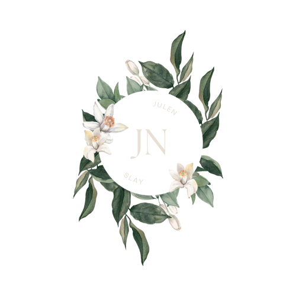
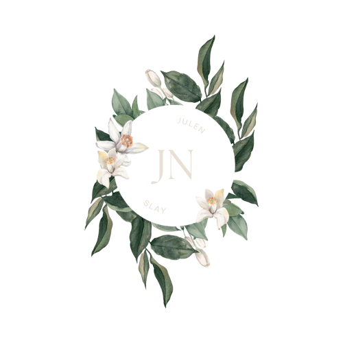
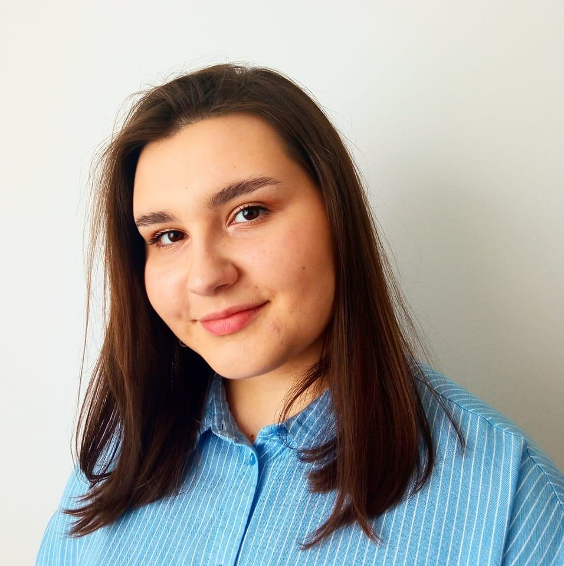

Julia Nocuń
I am a third year student of Applied Computer Science at Lodz University of Technology. I have knowledge of database creation and management, web development and programming in C++, Java and Phyton. I am fluent in English. I am a well-organized person, good at working in a team, determined and motivated to develop my skills. My main interest is Data Science and Machine Learning